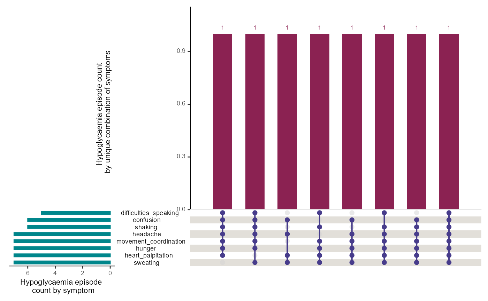
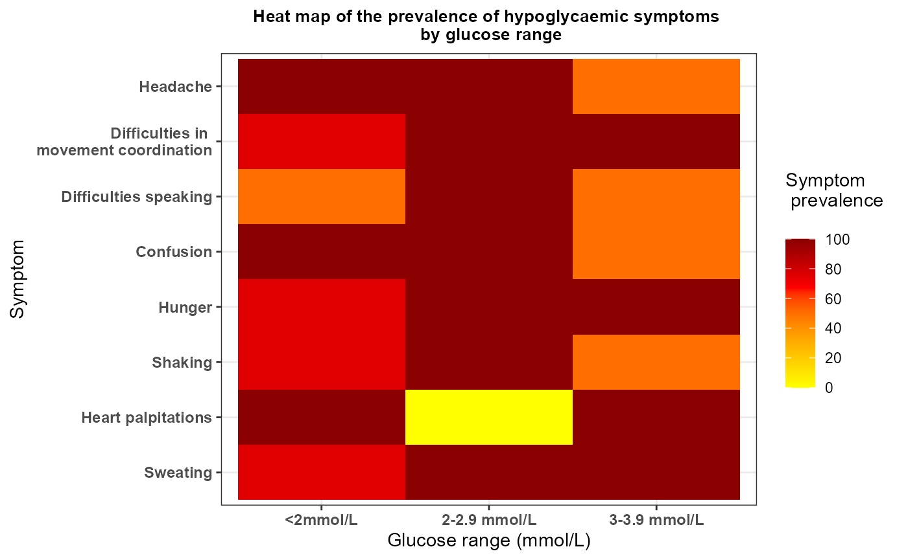

1. Introduction
As part of the Hypo-METRICS study, the bespoke Hypo-METRICS app was
developed via the software platform provided by uMotif Limited which recorded in
real-time and retrospectively through daily questionnaires,
person-reported hypoglycaemia episodes, their symptoms and impact on
daily life. The app also included validated questionnaires such as the
Work Productivity and Activity Impairment (WPAI), EuroQol-5 Dimensions-5
Levels (EQ-5D-5L) and Patient-Reported Outcomes Measurement Information
System (PROMIS) questionnaires. The hypometrics package
reads in data from the original version of the Hypo-METRICS app. The
Hypo-METRICS app features have since evolved and future work will ensure
that this is reflected in the package.
This article describes the uMotif-specific functions that were
created as part of the hypometrics package.
Setup
To be able to use the uMotif functions, firstly install and load
hypometrics.
#Install
install.packages("remotes")
remotes::install_github("leicester-cdag/hypometrics")
#Load package
library(hypometrics)Simulated data
Throughout this tutorial, the examples presented will be based on the
raw_motif_segment,
raw_checkin,
raw_promis,
raw_eq5d5l
and `raw_wpai
datasets.
2. Reading uMotif data
The function uMotifRead() allows the user to read raw
uMotif files downloaded directly from the uMotif data download portal.
If the downloaded folder is zipped, there is the option to unzip the
folder by setting the Unzip argument to TRUE. This will
create a new folder in the selected Folder Path called
Unzipped uMotif. The Fitbit file to read must be specified
using the FilePattern argument, for example the morning
check-in as shown below:
hypometrics::uMotifRead(Unzip = F,
FolderPath = "C:/Users",
FilePattern = "morning-checkin")Other examples of file types could be evening-checkin
for the daily evening questionnaire, motif-segment for the
real-time person-reported hypoglycaemic episodes and symptoms or
promis for the weekly PROMIS questionnaire.
3. Cleaning uMotif data
The umotifClean() function allows the user to clean
umotif data according to the type of file.
Real-time person-reported hypoglycaemic episodes
If the FileType argument of the function is set to
"motif", the function will turn raw data into a dataset
with one raw for each episode of hypoglycaemia episodes per individual,
along with the timing of each episode, glucose concentration and
intensity of symptoms reported in real-time using the motif flower in
the app. For more information regarding how episodes of hypoglycaemia
were reported during the Hypo-METRICS study, please refer to this article.
umotifClean(DataFrame = raw_motif_segment,
FileType = "motif")
#> # A tibble: 8 × 14
#> id motif_prh_number uMotifTime prh_time motif_prh_timestamp
#> <chr> <int> <dttm> <fct> <dttm>
#> 1 P01 1 2026-01-01 12:22:00 Now 2026-01-01 12:22:00
#> 2 P01 2 2026-01-08 07:17:00 >1h ago NA
#> 3 P01 3 2026-01-15 07:17:00 15mins ago 2026-01-15 07:02:00
#> 4 P02 1 2026-01-02 19:25:00 Now 2026-01-02 19:25:00
#> 5 P02 2 2026-01-02 19:30:00 Now 2026-01-02 19:30:00
#> 6 P02 3 2026-01-02 19:35:00 Now 2026-01-02 19:35:00
#> 7 P02 4 2026-01-13 03:52:00 15mins ago 2026-01-13 03:37:00
#> 8 P02 5 2026-01-16 15:52:00 >1h ago NA
#> # ℹ 9 more variables: glucose_concentration <fct>, sweating <fct>,
#> # heart_palpitation <fct>, shaking <fct>, hunger <fct>, confusion <fct>,
#> # difficulties_speaking <fct>, movement_coordination <fct>, headache <fct>Person-reported hypoglycaemic episodes recorded retrospectively
If the FileType argument of the function is set to
"checkin", the function will turn raw data into a dataset
with one raw for each episode of hypoglycaemia episodes per individual,
along with the timing of each episode, how participant detected the
episode and what course of action was undertaken at the time of the
episode. These are episodes reported retrospectively using the daily
morning and evening questionnaires. For more information regarding how
episodes of hypoglycaemia were reported during the Hypo-METRICS study,
please refer to this article.
umotifClean(DataFrame = raw_checkin,
FileType = "checkin")
#> # A tibble: 9 × 9
#> id checkin_prh_number stage localTimestamp Which_hypo
#> <chr> <int> <chr> <dttm> <chr>
#> 1 P01 1 Day-7 2026-01-07 09:41:45 first
#> 2 P01 2 Day-12 2026-01-12 09:41:45 first
#> 3 P01 3 Day-13 2026-01-13 09:41:45 first
#> 4 P02 1 Registration 2026-01-02 08:35:19 first
#> 5 P02 2 Day-2 2026-01-03 08:35:19 first
#> 6 P02 3 Day-4 2026-01-05 08:35:19 first
#> 7 P02 4 Day-6 2026-01-07 08:35:19 first
#> 8 P02 5 Day-11 2026-01-12 08:35:19 first
#> 9 P02 6 Day-14 2026-01-15 08:35:19 first
#> # ℹ 4 more variables: Atwhattimedidthishappen <dttm>,
#> # Howdidyoudetectyourhypoorahypothatwasabouttohappen <chr>,
#> # Howdidyoudetectyourhypoorahypothatwasabouttohappenotherpleasespecify <lgl>,
#> # Whathappened <chr>Work Productivity and Activity Impairment (WPAI) data
If the FileType argument of the function is set to
"wpai", the function will calculate WPAI scores based on
raw data. These scores give an insight of the impact of hypoglycaemia on
work and activity. Higher scores indicate greater impairment and less
productivity as a result of hypoglycaemia. Four scores are calculated:
percent work time missed due to hypoglycaemia, percent impairment while
working due to hypoglycaemia, percent overall work impairment due to
hypoglycaemia and percent activity impairment due to hypoglycaemia.
Scores are multiplied by 100 to express in percentages.
umotifClean(DataFrame = raw_wpai,
FileType = "wpai")
#> # A tibble: 6 × 7
#> id stage localTimestamp percent_worktime_mis…¹ percent_impairment_w…²
#> <chr> <chr> <chr> <dbl> <dbl>
#> 1 P01 Day-14 2026-01-15T07… 3 30
#> 2 P01 Day-7 2026-01-08T07… 0 30
#> 3 P01 Registrati… 2026-01-01T07… 3.6 20
#> 4 P02 Day-14 2026-01-16T15… 2.2 10
#> 5 P02 Day-7 2026-01-09T15… 6.7 30
#> 6 P02 Registrati… 2026-01-02T15… 100 20
#> # ℹ abbreviated names: ¹percent_worktime_missed_due_hypo,
#> # ²percent_impairment_whileworking_due_hypo
#> # ℹ 2 more variables: percent_overall_work_impairment_due_hypo <dbl>,
#> # percent_activity_impairment_due_hypo <dbl>EuroQol-5 Dimensions-5 Levels (EQ-5D-5L) data
If the FileType argument of the function is set to
"eq5d5l", the function will recode raw responses to
numerical values ranging from 1 to 5. The EQ-5D-5L includes questions on
mobility (MB), self-care (SC), usual activities (UA), pain/discomfort
(PD) and anxiety/depression (AD).
umotifClean(DataFrame = raw_eq5d5l,
FileType = "eq5d5l")
#> userid stage localTimestamp SC AD UA MB PD
#> 1 P01 Day-14 2026-01-15T07:17:00.000+00:00 5 2 3 4 1
#> 2 P01 Day-7 2026-01-08T07:17:00.000+00:00 3 2 3 5 2
#> 3 P01 Registration 2026-01-01T07:17:00.000+00:00 1 1 2 3 4
#> 4 P02 Day-14 2026-01-16T15:52:00.000+00:00 1 2 4 2 3
#> 5 P02 Day-7 2026-01-09T15:52:00.000+00:00 4 3 4 4 2
#> 6 P02 Registration 2026-01-02T15:52:00.000+00:00 5 5 2 5 1Patient-Reported Outcomes Measurement Information System (PROMIS) data
If the FileType argument of the function is set to
"promis", the function will calculate sum scores and
associated T scores from raw PROMIS data. For more information about the
PROMIS scores, please follow this link.
umotifClean(DataFrame = raw_promis,
FileType = "promis")
#> # A tibble: 6 × 5
#> id stage localTimestamp raw_score t_score
#> <chr> <chr> <chr> <dbl> <dbl>
#> 1 P01 Day-14 2026-01-15T07:17:00.000+00:00 22 52.2
#> 2 P01 Day-7 2026-01-08T07:17:00.000+00:00 26 56.3
#> 3 P01 Registration 2026-01-01T07:17:00.000+00:00 23 53.3
#> 4 P02 Day-14 2026-01-16T15:52:00.000+00:00 18 47.9
#> 5 P02 Day-7 2026-01-09T15:52:00.000+00:00 18 47.9
#> 6 P02 Registration 2026-01-02T15:52:00.000+00:00 30 60.44. Linking Real-Time and Retrospective uMotif Person-Reported Hypoglycaemia (PRH) Data
The prhLink() function allows the linkage of real-time
(motif flower) and retrospective (check-ins) uMotif PRH data. The user
firstly needs to clean umotif data using the uMotifClean()
function, as shown below:
## Cleaning motif and checkin data
motif <- umotifClean(DataFrame = hypometrics::raw_motif_segment,
FileType = "motif")
checkin <- umotifClean(DataFrame = hypometrics::raw_checkin,
FileType = "checkin")
## Creating the linked PRH dataset
prhLink(MotifDataFrame = motif,
CheckinDataFrame = checkin) %>%
dplyr::select(1:4) %>%
dplyr::slice(1:10)
#> id checkin_prh_timestamp motif_prh_timestamp night_status
#> <char> <POSc> <POSc> <char>
#> 1: P01 <NA> 2026-01-01 12:22:00 Day
#> 2: P01 2026-01-07 04:08:00 <NA> Night
#> 3: P01 2026-01-12 04:01:00 <NA> Night
#> 4: P01 2026-01-12 22:17:00 <NA> Day
#> 5: P01 <NA> 2026-01-15 07:02:00 Day
#> 6: P02 2026-01-02 02:21:00 <NA> Night
#> 7: P02 <NA> 2026-01-02 19:25:00 Day
#> 8: P02 <NA> 2026-01-02 19:30:00 Day
#> 9: P02 <NA> 2026-01-02 19:35:00 Day
#> 10: P02 2026-01-03 00:50:00 <NA> NightThe resulting output is a dataset with one row per PRH event. When real-time and retrospective PRH were recorded within one hour of each other, these will appear on the same row as they are considered to be the same event. Here, there are no such instances. The night_status column indicates whether the PRH occurred at night (between 00:00 and 06:00) or day. The output contains additional information such as hypoglycaemia symptoms reported, but for illustrative purposes here, only a limited number of columns are shown.
If the user has sleep data available, it is possible to add this information to the dataset by running the function and changing the default parameters, as shown below. This will create an additional variable with sleep_status of the PRH as defined using a sleep tracker (here the Fitbit).
## Creating the linked PRH dataset
prhLink(MotifDataFrame = motif,
CheckinDataFrame = checkin,
AddSleepStatus = "yes",
SleepDataFrame = raw_sleep) 5. Summarising person-reported hypoglycaemia (PRH) data
It is possible to obtain key PRH metrics using the
prhSummarise() function. The user will get key information
such as the total number of PRHs, the number that were symptomatic,
prevented, or the number occurring at day or night. If sleep data is
available, the parameter AddSleepSummary can be turned to
“yes” and the number of PRH when asleep, awake or when sleep information
was missing for each PRH and participant will also be calculated.
The function requires the data to be in the format as the output of
the prhLink() function.
## Cleaning motif and checkin data
motif <- umotifClean(DataFrame = hypometrics::raw_motif_segment,
FileType = "motif")
checkin <- umotifClean(DataFrame = hypometrics::raw_checkin,
FileType = "checkin")
## Creating the linked PRH dataset
prh_map <- prhLink(MotifDataFrame = motif,
CheckinDataFrame = checkin)
## summarising PRH data
prhSummarise(prh_map)
#> # A tibble: 2 × 6
#> id n_prh_all n_prh_symptomatic n_prh_prevented n_prh_night n_prh_day
#> <chr> <int> <int> <int> <int> <int>
#> 1 P01 5 2 1 2 3
#> 2 P02 10 7 2 6 4We can see that participant “P02” had a total of 10 PRHs, 7 were symptomatic and 6 occurred during the day.
6. Visualising person-reported hypoglycaemia symptoms data
The prhVisualise() function allows the user to visualise
symptoms reported in real-time using the motif flower in the
Hypo-METRICS app. Depending on the graph type selected, the user can
visualise either the different combinations of symptoms reported or the
frequency of symptoms according to glucose concentration.
Combination of symptoms
If the GraphType argument of the function is set to
"upset", the function will leverage the upset function from
the UpSetR
package to build an upset plot showing all possible intersection of
symptoms, as shown below. The default of the function is to visualise
symptoms for all participants included with the
VisualiseAll argument set as TRUE.
prhVisualise(DataFrame = raw_motif_segment,
GraphType = "upset")
If the user needs to visualise data for a specific participant, this
can be done by changing the argument VisualiseAll to FALSE
and indicating the participant id of interest in the UserID
argument, using the syntax below:
prhVisualise(DataFrame = raw_motif_segment,
GraphType = "upset",
VisualiseAll = FALSE,
UserID = "P02")Frequency of symptoms by glucose concentration
If the GraphType argument of the function is set to
"heatmap", the function will calculate the frequency of
each symptom as the number of times a symptom was reported divided by
the total number of hypoglycaemic episodes reported at glucose
concentration. The calculated frequencies will be presented as a heat
map with darker colours indicating a higher symptom frequency. The
default of the function is to visualise symptoms for all participants
included with the VisualiseAll argument set as TRUE.
prhVisualise(DataFrame = raw_motif_segment,
GraphType = "heatmap")
If the user needs to visualise data for a specific participant, this
can be done by changing the argument VisualiseAll to FALSE
and indicating the participant id of interest in the UserID
argument, using the syntax below:
prhVisualise(DataFrame = raw_motif_segment,
GraphType = "heatmap",
VisualiseAll = FALSE,
UserID = "P02")